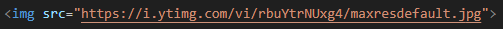
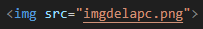
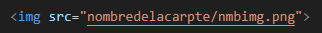
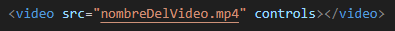
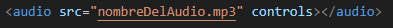
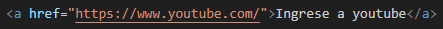
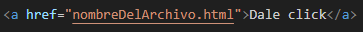

Las etiquetas de enlace nos permite mostrar imagenes, videos y audios en nuestra pagina ademas poder dirigirnos a otras paginas.
La etiqueta <img> nos ayudara a mostrar una imagen en nuestra página.
El atributo src es una abrebiación de la palabra source que significa fuente
La etiqueta <img> tiene el atributo src en el que pondremos la ruta de la imágen que
queramos usar, podemos usar imágenes de internet o los que tengamos guardado.
Si queremos usar una imagen de internet solo devemos copiar el enlace de este, pero devemos asegurarnos que el final del enlace termine con la exteción de una imagen como .jpg o .png y si no tiene esta extención la imagen no se mostrara.
Para mostrar una imagen que se encuentra alojada en nuesto pc, sencillamente tendremos que poner el nombre de la imagen.
Pero si nuestra imágen esta guardad dentro de un carpeta diferente, primero pondremos el nombre de la carpeta luego un / seguido del nombre de la imágen.
La etiqueta para mostrar el video es una etiqueta que tiene un cierre.
La atributo controls nos da controles para el video, predeterminados por la computadora
Al igual que la etiqueta <img>, en este tambien podes usar videos de internet que tengan la extencion de
un video, ademas tiene un atributo mas que es controls que permite que nuestro video tenga controles de un video como ponerle
play, aumentar el volumen y agrandar la pantalla, y si la etiqueta no cuenta con este atributo el video no se podra reproducir.
La etiqueta de audio funciona del mismo modo que el de video.
Aqui tambien podras poner archivos con ruta de un video y solo se mostrar el audio de este.
Con esta etiqueta podremos redirigirnos ha otras paginas al darle click.

La etiqueta <a> y su atributo href que tiene la misma funcion que el src pero en este
pondremos el enlaces de alguna página al que nos queramos dirigir, y devemos agregar un texto entre las etiquetas
<a> y </a>, de esa manera ese texto sera el enlace que al precionar se abrira
la página del enlace y si no tiene ningun texto no se mostrar ningun enlace.
Tambien podemos abrir nuestras páginas poniendo el nombre del archivo.
Si el archivo esta en una carpeta diferente solo tienes que poner el nombre de la carpeta seguido de un slash (/) y el
nombre del archivo ejm: carpeta/archivo.html
Para que el enlace se abra en una pestaña distinta del navegador, usaremos el siguiente atributo.

El atributo target y su dato _blank permite que el enlace se ejecute en una pestaña distinta.